かたくらシルクホテル様
全9室すべてに。部屋ごとにWAONの色とアンプを選びました。
WAON ／ UA-1 ／ DA-1
Places with MH audio — 16 stories
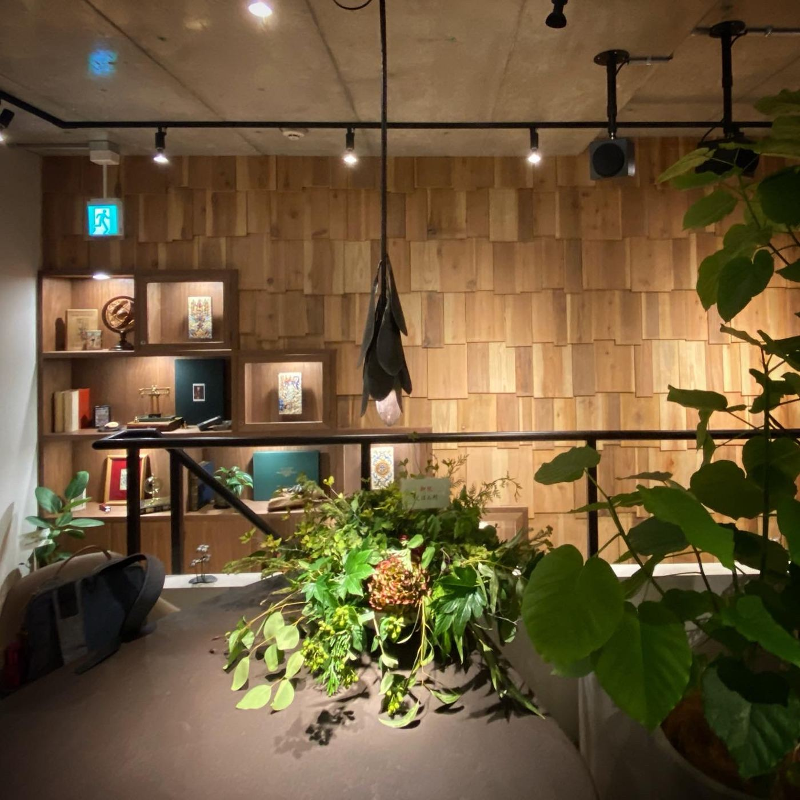
全9室すべてに。部屋ごとにWAONの色とアンプを選びました。
WAON ／ UA-1 ／ DA-1
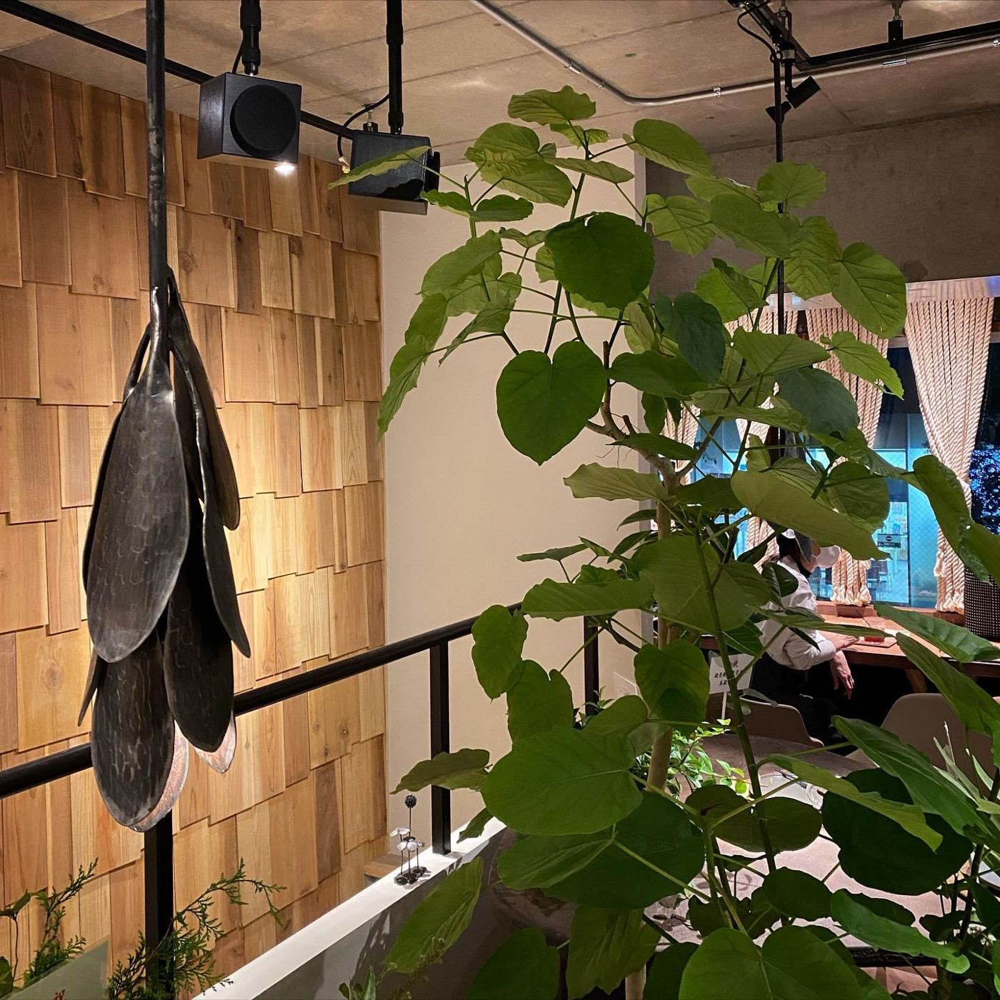
東京タロット美術館のミュージアムカフェ。美術館に続いて。
WAON ／ UA-1
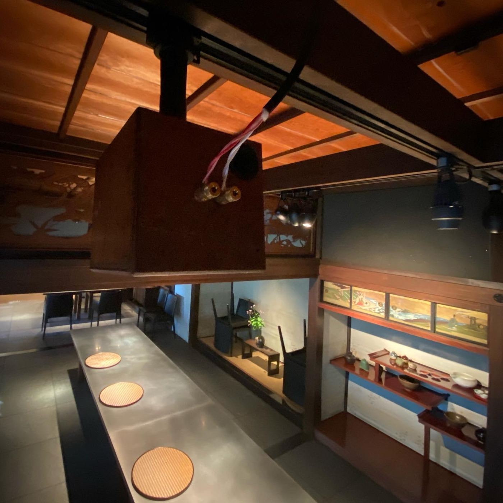
築200年の古民家。客席の上と受付に1組ずつ。
WAON ／ DA-1
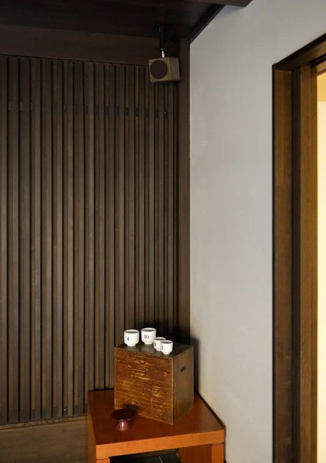
店内の塗料と同じ色でWAONを仕上げ、4本を設置。
WAON
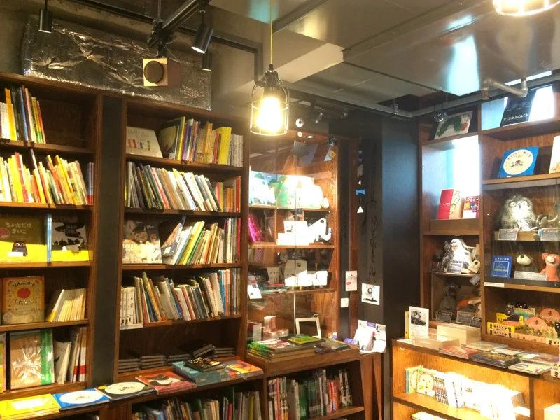
1階の売り場とスターバックスの店内音響に。
WAON
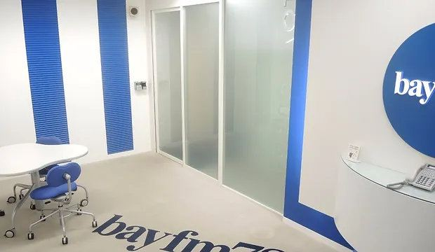
ロビーとオフィスで、放送を聴くモニターとして。
WAON
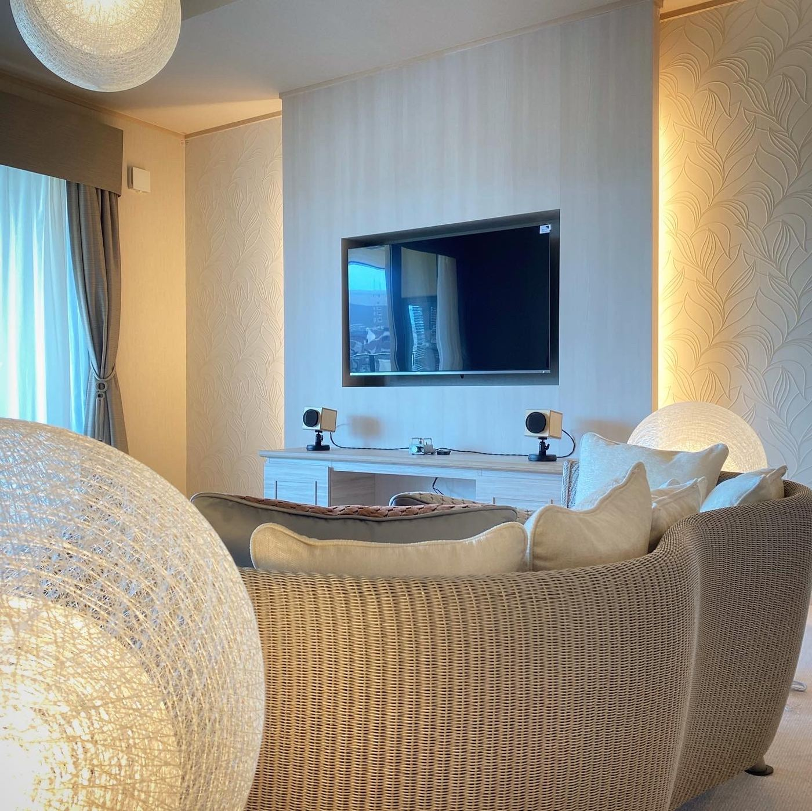
A room in Suwa.
ホテル・長野 諏訪市 かたくらシルクホテル様。全9室に、部屋ごとのインテリアに合わせたWAONとアンプが置かれています。
読みもの「ホテルの客室に置くオーディオ」| ホテル | かたくらシルクホテル様諏訪市 | WAON・UA-1・DA-1 |
| 和食 | 万る山様豊科 | WAON・DA-1 |
| 酒蔵 | セラ真澄様諏訪市 | WAON |
| パン | 太養パン様諏訪市 | WAON |
| 洋菓子 | キャトル・セゾン様富士見町 | WAON・UA-1・DA-1 |
| 宿 | SUNPIKA TOKYO様都内 | WAON・DA-1 |
| カフェ | CAFÉ Tarot様浅草橋 | WAON・UA-1 |
| 美術館 | 東京タロット美術館様浅草橋 | WAON・UA-1 |
| イタリアン | イル・ポルトローネ様北千住 | WAON |
| 書店 | 六本木蔦屋書店様六本木 | WAON |
| 放送局 | ベイエフエム「bayfm78」様幕張新都心 | WAON |
このほか、代官山のアパレル店、名古屋のセレクトショップ、立体音響の制作会社などでも使っていただいています。
「大きく複雑なものが良い音がする…本当でしょうか？」 導入した場所の言葉といっしょに、4つの理由を。

No. 1
音が空間にしみ込むように広がるので、小さな音量でも部屋のどこでもはっきり聴こえます。
小音量でも部屋のどこでもクリアに聴こえる
かたくらシルクホテル様
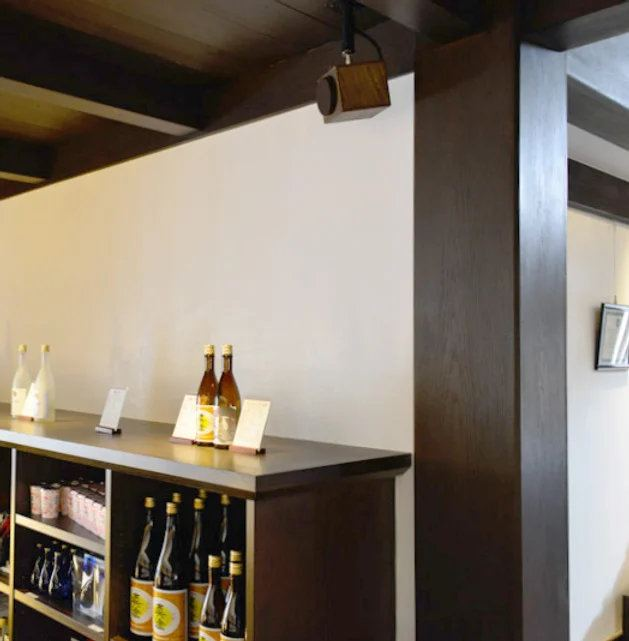
No. 2
声や楽器を素直に伝え、耳に刺さらない音。接客や食事の会話の中で、BGMがそっと寄り添います。
小さな音でもちゃんと聴こえ、会話の邪魔にならぬよう
宮坂醸造「セラ真澄」様

No. 3
営業中ずっと流していても、聴き疲れしにくい自然な響き。働く人にもやさしい音です。
ロビーとオフィスの放送モニターとして毎日
ベイエフエム「bayfm78」様

No. 4
CDジャケットほどの木の箱。軽いので、レールや梁に付けても建物に負担をかけません。
客席の上のレールと受付カウンターに1組ずつ
和食レストラン「万る山」様
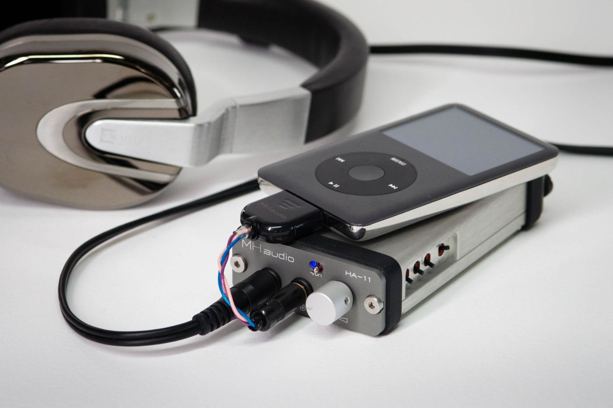

スピーカー
CDジャケットほどの木の箱。柿渋を重ねて仕上げています。

スピーカー
お部屋の家具の色に合わせて選べる素材ちがい。
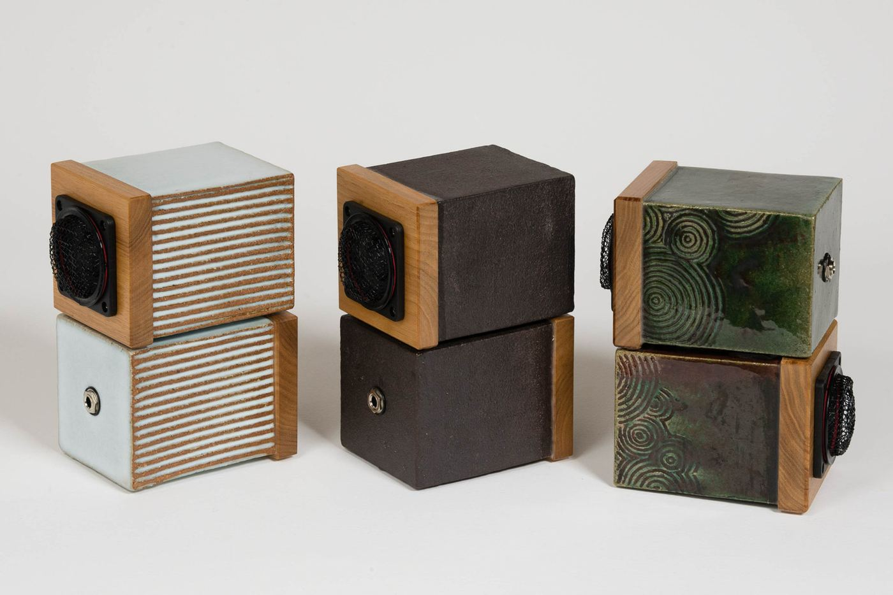
スピーカー
デスクやカウンターに置ける、小さなスピーカー。

アンプ
真空管アンプの良さを、手のひらのサイズに。

アンプ
置き場所を選ばない、小さなデジタルアンプ。
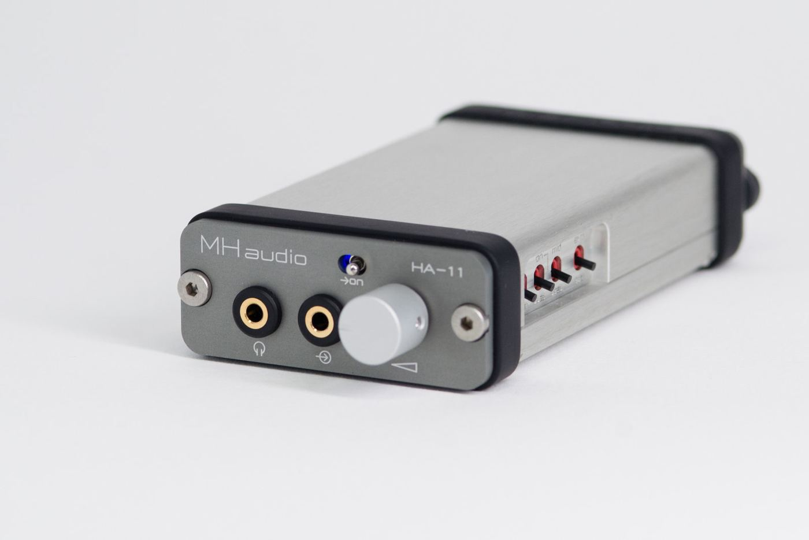
ヘッドホンアンプ
HA-11はオーディオ銘機賞2014受賞。


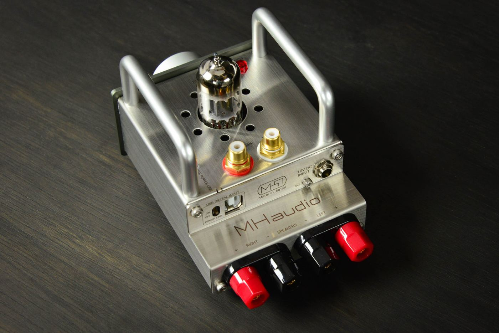

掲載内容イメージ
作り手・長野県富士見町
MH audioは、長野県富士見町の小さな工房です。代表の星野が、設計から仕上げ、お届けまでをほぼ一人で手がけています。
精密加工や家具の専門家の力を借りながら、一台ずつ手で仕上げるので、造りは少しずつ違います。長く使っていただける質感を大切にしています。
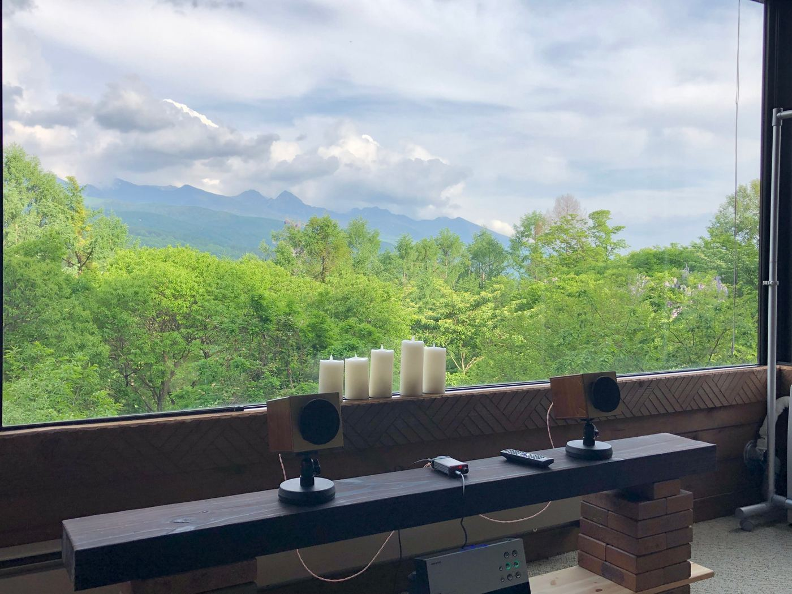
| 銀座 山野楽器 本店 | 東京・銀座 |
| 代官山蔦屋書店 | 東京・代官山 |
| 二子玉川 蔦屋家電 | 東京・二子玉川 |
| アコースティックオーディオセット | 岡谷市・富士見町 |
| 真空管アコースティックオーディオセット | 岡谷市・富士見町 |
| 超小型モニターオーディオセット | 岡谷市 |
| ヘッドホンアンプ HA-1 プレカスタムモデル | 岡谷市 |
長野県 岡谷市・富士見町。内容は各自治体のページでご確認ください。
置きたい場所の広さや雰囲気をお聞きして、合う組み合わせをメールでご提案します。お店・ホテルの方も、ご自宅の方も同じ窓口です。